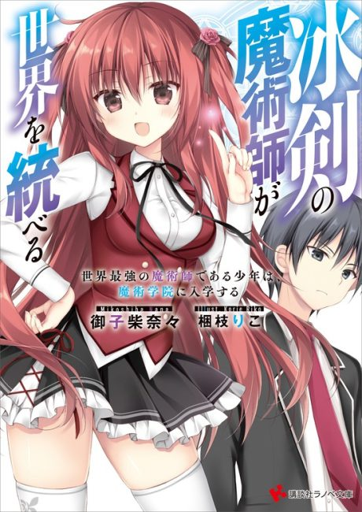

The Iceblade Sorcerer Shall Rule the World
冰剣の魔術師が世界を統べる
The anime takes the story to Not checked.
6.3AniList score
—Animeter, no votes yet
15episodes, 2 seasons
Is it worth pushing through?
Built from what visitors report across all 2 seasons (15 episodes).
Loading reports…Checking what other people said about this one.
Sign in above with your email to add your report.
More like The Iceblade Sorcerer Shall Rule the World
 Original6.9
Original6.9
 Manga Ch. 757.6
Manga Ch. 757.6
 Not checked6.3
Not checked6.3
 Not checked5.9
Not checked5.9
 Manga Vol. 77.2
Manga Vol. 77.2
 Not checked5.8
Not checked5.8